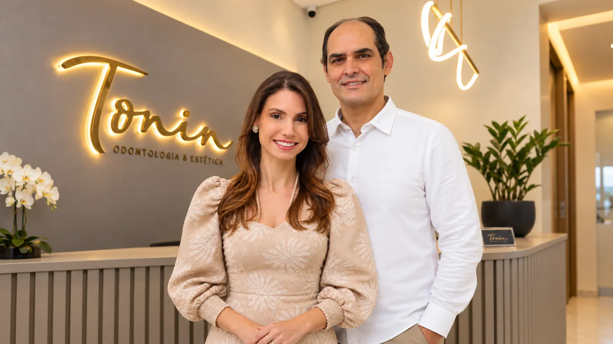
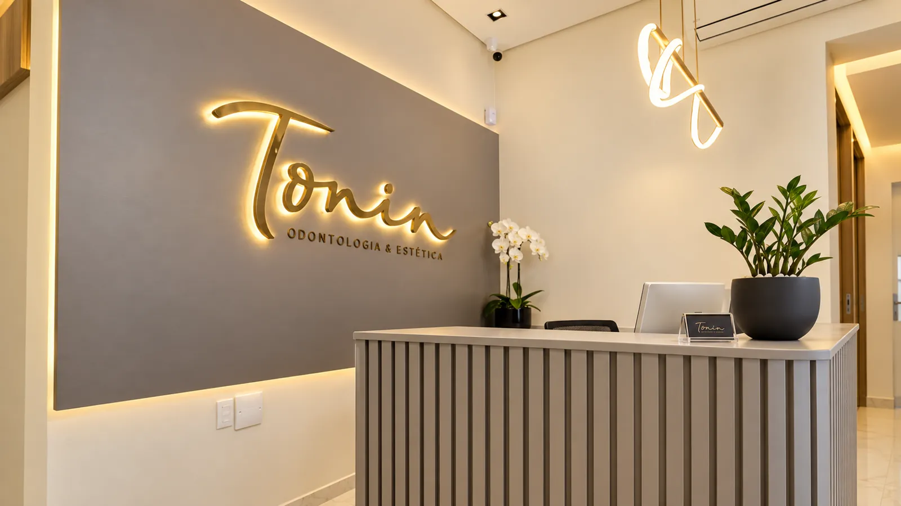
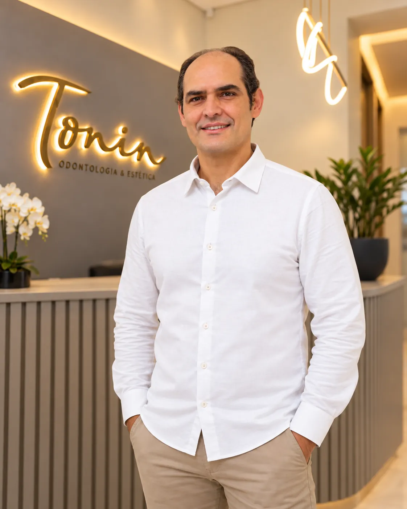
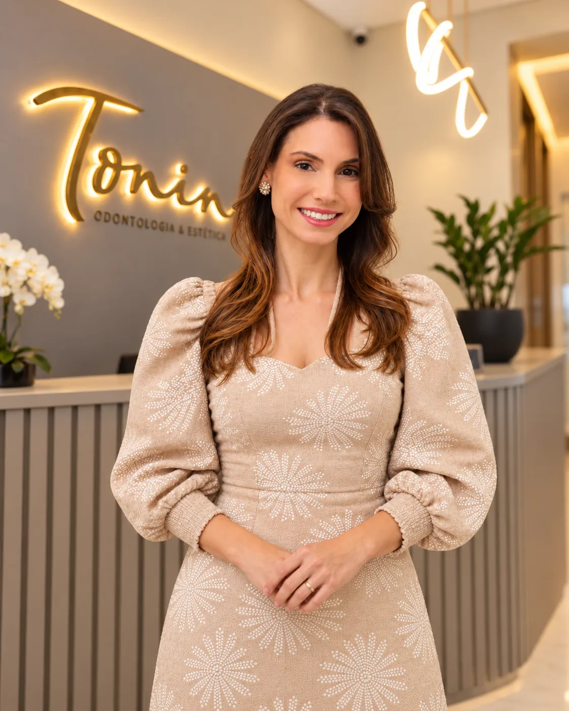

Aparelhos dentários
Opções convencionais e autoligadas para cuidar do alinhamento do sorriso.
Uma experiência de cuidado que une atenção individual, acolhimento e um olhar atento para você.

Da primeira conversa ao planejamento, cada pessoa merece atenção às suas necessidades e objetivos.
A indicação de cada tratamento depende de avaliação individual com a equipe.

Na Tonin, o ambiente faz parte da experiência. A clínica recebe você em um espaço acolhedor, com uma equipe pronta para ouvir, orientar e acompanhar cada etapa da sua visita.
Explore o espaçoUm rosto conhecido, uma conversa atenta e cuidado próximo em cada encontro.

Cirurgião-dentista · Implantodontia, Ortodontia e Radiologia Odontológica

Cirurgiã-dentista · Ortodontia e Harmonização Orofacial
Da chegada à conversa com a equipe, cada detalhe contribui para uma visita mais tranquila e acolhedora.
Um espaço para explicar o que você procura e tirar dúvidas.
Orientação que considera suas necessidades e expectativas.
Uma recepção pensada para receber bem.
Conversa clara ao longo da sua jornada na clínica.
5,0 de 5 no Google
Mais de 60 avaliações de pacientes.
“Sou cliente há mais de 5 anos e não troco por nada 😍”
Andressa Miranda Sinnott“Ótimo profissional, atendimento nota 1000”
Sandra Helena Ortiz“Atendimento excelente, muito atenciosos e ótimos profissionais”
Chaiane PollnowAvaliações públicas consultadas no Google em outubro de 2026. Ver todas as avaliações no Google
Conte o que você procura. A equipe Tonin pode orientar você sobre a consulta e os próximos passos.
Reunimos as dúvidas mais comuns para ajudar você a dar o primeiro passo com tranquilidade.
Ainda tem dúvidas? Fale com a equipeEnvie uma mensagem para o WhatsApp (53) 98465-4436. A equipe informa os horários disponíveis e orienta você sobre o agendamento.
Você pode explicar o que deseja cuidar, há quanto tempo percebe a questão e se tem dúvidas sobre algum tratamento. A equipe indicará os próximos passos e, quando necessário, uma avaliação presencial.
A clínica divulga aparelhos convencionais e autoligados, alinhadores invisíveis, implantes dentários, tratamentos odontológicos clínicos gerais e estética facial. O tratamento adequado é definido após avaliação individual.
Isso depende das suas necessidades e de uma avaliação profissional. Durante a consulta, você poderá conversar sobre as opções, tirar dúvidas e entender o planejamento proposto para o seu caso.
A Tonin fica na Rua Senador Mendonça, 5C, Centro, Pelotas/RS. Use o botão “Como chegar” na área de contato para abrir a rota no mapa.
Sim. A equipe pode informar a disponibilidade e orientar sobre atendimento e valores. O orçamento de um tratamento específico pode depender da avaliação do seu caso.
Estamos na Rua Senador Mendonça, 5C, no Centro de Pelotas. Entre em contato para agendar uma consulta.
Fale com a equipe para consultar horários e tirar suas dúvidas.
Conversar pelo WhatsApp